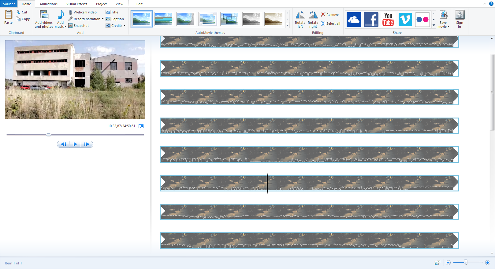
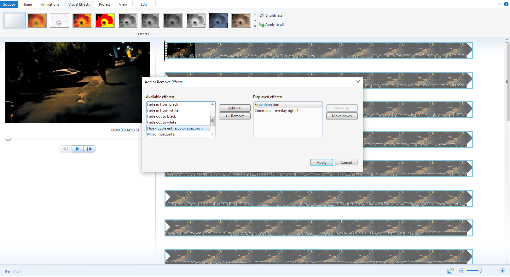
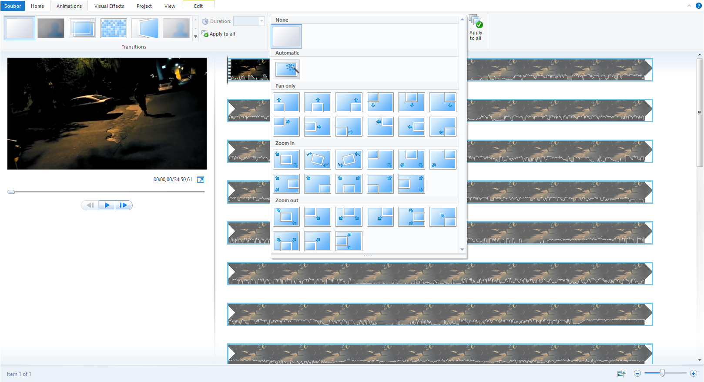
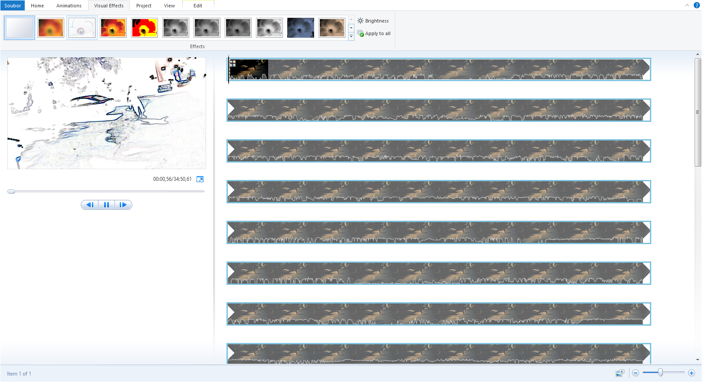

Funkce
Editační nástroje
movX Pro přichází se všemi průmyslovými násstroji pro úpravu, ve snadno použitelném rozhraní. Ať už vytváříte svižné sestřihy nebo filmové úpravy, akcelerace GPU získá z vašeho hardwaru ten nejlepší výkon, takže čas trávíte jen tím důležitým.
Vizualní efekty
S movx Pro máte přístup k úpravám barev, světelným efektům, odleskům a mnoha dalšího.


